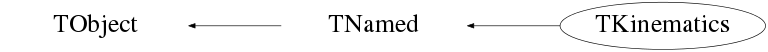

Function Members (Methods)
public:
| TKinematics(const TKinematics&) | |
| TKinematics(TNucleus* projectile, TNucleus* target, double ebeam, const char* name = "") | |
| TKinematics(TNucleus* projectile, TNucleus* target, TNucleus* recoil, TNucleus* ejectile, double ebeam, const char* name = "") | |
| TKinematics(TNucleus* projectile, TNucleus* target, TNucleus* recoil, TNucleus* ejectile, double ebeam, double ex3, const char* name = "") | |
| ~TKinematics() | |
| void | TObject::AbstractMethod(const char* method) const |
| double | Angle_cm2lab(double vcm, double angle_cm) |
| double | Angle_lab2cm(double vcm, double angle_lab) |
| double | Angle_lab2cminverse(double vcm, double angle_lab, bool upper) |
| void | AngleErr_lab2cm(double angle, double& err) |
| virtual void | TObject::AppendPad(Option_t* option = "") |
| virtual void | TObject::Browse(TBrowser* b) |
| bool | CheckMaxAngle(double angle, int part) |
| static TClass* | Class() |
| virtual const char* | TObject::ClassName() const |
| virtual void | Clear(Option_t* opt = "") |
| virtual TObject* | TNamed::Clone(const char* newname = "") const |
| TSpline3* | cmvslab(double thmin, double thmax, double size, int part = 2) |
| virtual Int_t | TNamed::Compare(const TObject* obj) const |
| virtual void | TNamed::Copy(TObject& named) const |
| virtual void | TObject::Delete(Option_t* option = "")MENU |
| virtual Int_t | TObject::DistancetoPrimitive(Int_t px, Int_t py) |
| virtual void | TObject::Draw(Option_t* option = "") |
| virtual void | TObject::DrawClass() constMENU |
| virtual TObject* | TObject::DrawClone(Option_t* option = "") constMENU |
| virtual void | TObject::Dump() constMENU |
| double | ELab(double angle_lab, int part) |
| virtual void | TObject::Error(const char* method, const char* msgfmt) const |
| TSpline3* | Evscm(double thmin, double thmax, double size, int part = 2) |
| TSpline3* | Evslab(double thmin, double thmax, double size, int part = 2) |
| virtual void | TObject::Execute(const char* method, const char* params, Int_t* error = 0) |
| virtual void | TObject::Execute(TMethod* method, TObjArray* params, Int_t* error = 0) |
| virtual void | TObject::ExecuteEvent(Int_t event, Int_t px, Int_t py) |
| virtual void | TObject::Fatal(const char* method, const char* msgfmt) const |
| virtual void | TNamed::FillBuffer(char*& buffer) |
| void | Final(double angle, int part) |
| void | FinalCm() |
| virtual TObject* | TObject::FindObject(const char* name) const |
| virtual TObject* | TObject::FindObject(const TObject* obj) const |
| double | GetBeamEnergy(double LabAngle, double LabEnergy) |
| double | GetBetacm() |
| double | GetBetacm(int i) |
| double | GetCmEnergy() |
| double | GetCmEnergy(double ebeam) |
| virtual Option_t* | TObject::GetDrawOption() const |
| static Long_t | TObject::GetDtorOnly() |
| double | GetEcm(int i) |
| double | GetElab(int i) |
| double | GetExcEnergy(TLorentzVector recoil) |
| double | GetExcEnergy(TVector3 position, double KinE) |
| double | GetGammacm() |
| virtual const char* | TObject::GetIconName() const |
| double | GetM(int i) |
| double | GetMaxAngle(double vcm) |
| double | GetMaxAngle(int part) |
| virtual const char* | TNamed::GetName() const |
| virtual char* | TObject::GetObjectInfo(Int_t px, Int_t py) const |
| static Bool_t | TObject::GetObjectStat() |
| virtual Option_t* | TObject::GetOption() const |
| double | GetQValue() |
| double | GetTcm(int i) |
| double | GetThetacm(int i) |
| double | GetThetalab(int i) |
| virtual const char* | TNamed::GetTitle() const |
| double | GetTlab(int i) |
| virtual UInt_t | TObject::GetUniqueID() const |
| double | GetV(int i) |
| double | GetVcm(int i) |
| virtual Bool_t | TObject::HandleTimer(TTimer* timer) |
| virtual ULong_t | TNamed::Hash() const |
| virtual void | TObject::Info(const char* method, const char* msgfmt) const |
| virtual Bool_t | TObject::InheritsFrom(const char* classname) const |
| virtual Bool_t | TObject::InheritsFrom(const TClass* cl) const |
| void | Initial() |
| virtual void | TObject::Inspect() constMENU |
| void | TObject::InvertBit(UInt_t f) |
| virtual TClass* | IsA() const |
| virtual Bool_t | TObject::IsEqual(const TObject* obj) const |
| virtual Bool_t | TObject::IsFolder() const |
| Bool_t | TObject::IsOnHeap() const |
| virtual Bool_t | TNamed::IsSortable() const |
| Bool_t | TObject::IsZombie() const |
| TSpline3* | labvscm(double thmin, double thmax, double size, int part = 2) |
| virtual void | TNamed::ls(Option_t* option = "") const |
| void | TObject::MayNotUse(const char* method) const |
| double | NormalkinEnergy() |
| virtual Bool_t | TObject::Notify() |
| void | TObject::Obsolete(const char* method, const char* asOfVers, const char* removedFromVers) const |
| static void | TObject::operator delete(void* ptr) |
| static void | TObject::operator delete(void* ptr, void* vp) |
| static void | TObject::operator delete[](void* ptr) |
| static void | TObject::operator delete[](void* ptr, void* vp) |
| void* | TObject::operator new(size_t sz) |
| void* | TObject::operator new(size_t sz, void* vp) |
| void* | TObject::operator new[](size_t sz) |
| void* | TObject::operator new[](size_t sz, void* vp) |
| TKinematics& | operator=(const TKinematics&) |
| virtual void | TObject::Paint(Option_t* option = "") |
| virtual void | TObject::Pop() |
| void | Print(Option_t* opt = "") |
| virtual Int_t | TObject::Read(const char* name) |
| virtual void | TObject::RecursiveRemove(TObject* obj) |
| void | TObject::ResetBit(UInt_t f) |
| double | Rutherford(double angle_cm) |
| TSpline3* | Ruthvscm(double thmin, double thmax, double size) |
| TSpline3* | Ruthvslab(double thmin, double thmax, double size, int part) |
| virtual void | TObject::SaveAs(const char* filename = "", Option_t* option = "") constMENU |
| virtual void | TObject::SavePrimitive(ostream& out, Option_t* option = "") |
| void | SetAngles(double angle, int part, bool upper = false) |
| void | TObject::SetBit(UInt_t f) |
| void | TObject::SetBit(UInt_t f, Bool_t set) |
| virtual void | TObject::SetDrawOption(Option_t* option = "")MENU |
| static void | TObject::SetDtorOnly(void* obj) |
| virtual void | TNamed::SetName(const char* name)MENU |
| virtual void | TNamed::SetNameTitle(const char* name, const char* title) |
| static void | TObject::SetObjectStat(Bool_t stat) |
| virtual void | TNamed::SetTitle(const char* title = "")MENU |
| virtual void | TObject::SetUniqueID(UInt_t uid) |
| virtual void | ShowMembers(TMemberInspector&) |
| double | Sigma_cm2lab(double angle_cm, double sigma_cm) |
| double | Sigma_lab2cm(double angle_cm, double sigma_lab) |
| void | SigmaErr_lab2cm(double angle, double err, double& sigma, double& errsigma) |
| virtual Int_t | TNamed::Sizeof() const |
| virtual void | Streamer(TBuffer&) |
| void | StreamerNVirtual(TBuffer& ClassDef_StreamerNVirtual_b) |
| virtual void | TObject::SysError(const char* method, const char* msgfmt) const |
| Bool_t | TObject::TestBit(UInt_t f) const |
| Int_t | TObject::TestBits(UInt_t f) const |
| void | Transform2cm(double& angle, double& sigma) |
| void | Transform2cm(double& angle, double& errangle, double& sigma, double& errsigma) |
| virtual void | TObject::UseCurrentStyle() |
| virtual void | TObject::Warning(const char* method, const char* msgfmt) const |
| virtual Int_t | TObject::Write(const char* name = 0, Int_t option = 0, Int_t bufsize = 0) |
| virtual Int_t | TObject::Write(const char* name = 0, Int_t option = 0, Int_t bufsize = 0) const |
protected:
| virtual void | TObject::DoError(int level, const char* location, const char* fmt, va_list va) const |
| void | TObject::MakeZombie() |
Data Members
public:
| enum TObject::EStatusBits { | kCanDelete | |
| kMustCleanup | ||
| kObjInCanvas | ||
| kIsReferenced | ||
| kHasUUID | ||
| kCannotPick | ||
| kNoContextMenu | ||
| kInvalidObject | ||
| }; | ||
| enum TObject::[unnamed] { | kIsOnHeap | |
| kNotDeleted | ||
| kZombie | ||
| kBitMask | ||
| kSingleKey | ||
| kOverwrite | ||
| kWriteDelete | ||
| }; |
protected:
| TString | TNamed::fName | object identifier |
| TString | TNamed::fTitle | object title |
private:
| double | fBeta_cm | |
| double | fBetacm[4] | |
| double | fE[4] | |
| double | fEBeam | |
| double | fEcm[4] | |
| double | fGamma_cm | |
| double | fM[4] | |
| double | fP[4] | |
| TNucleus* | fParticle[4] | |
| double | fPcm[4] | |
| double | fQValue | |
| double | fT[4] | |
| double | fTCm_f | |
| double | fTCm_i | |
| double | fTcm[4] | |
| double | fTheta[4] | |
| double | fThetacm[4] | |
| double | fV[4] | |
| double | fVcm[4] |
Class Charts
{kind=link}
{kind=link}
{kind=link}
{kind=link}

Function documentation
TKinematics(TNucleus* projectile, TNucleus* target, double ebeam, const char* name = "")
TKinematics(TNucleus* projectile, TNucleus* target, TNucleus* recoil, TNucleus* ejectile, double ebeam, const char* name = "")
TKinematics(TNucleus* projectile, TNucleus* target, TNucleus* recoil, TNucleus* ejectile, double ebeam, double ex3, const char* name = "")
TSpline3* Evslab(double thmin, double thmax, double size, int part = 2)
cout << "maximum scattering angle: " << GetMaxAngle(fVcm[part])*180./PI << endl; cout << "max " << thmax << " min " << thmin << " steps " << (int)((thmax-thmin)/size)+1 << endl;
TSpline3* Evscm(double thmin, double thmax, double size, int part = 2)
double GetExcEnergy(TLorentzVector recoil)
double GetExcEnergy(TVector3 position, double KinE)
double GetBeamEnergy(double LabAngle, double LabEnergy)
void Initial()
void FinalCm()
void Final(double angle, int part)
double ELab(double angle_lab, int part)
void SetAngles(double angle, int part, bool upper = false)
double GetCmEnergy(double ebeam)
double GetCmEnergy()
double NormalkinEnergy()
double GetMaxAngle(double vcm)
double GetMaxAngle(int part)
bool CheckMaxAngle(double angle, int part)
double Angle_lab2cm(double vcm, double angle_lab)
double Angle_lab2cminverse(double vcm, double angle_lab, bool upper)
void AngleErr_lab2cm(double angle, double& err)
double Angle_cm2lab(double vcm, double angle_cm)
TSpline3* labvscm(double thmin, double thmax, double size, int part = 2)
TSpline3* cmvslab(double thmin, double thmax, double size, int part = 2)
double Sigma_cm2lab(double angle_cm, double sigma_cm)
double Sigma_lab2cm(double angle_cm, double sigma_lab)
void SigmaErr_lab2cm(double angle, double err, double& sigma, double& errsigma)
void Transform2cm(double& angle, double& errangle, double& sigma, double& errsigma)
double Rutherford(double angle_cm)
TSpline3* Ruthvscm(double thmin, double thmax, double size)
TSpline3* Ruthvslab(double thmin, double thmax, double size, int part)
double Pcm_em(double , double )
double P_tm(double , double )
double E_tm(double , double )
double T_em(double , double )
double betacm_tm(double , double )
double V_pe(double , double )
double E_final(int )
double T_final(int )
TKinematics(TNucleus* projectile, TNucleus* target, double ebeam, const char* name = "")
double GetThetalab(int i)
double GetThetacm(int i)